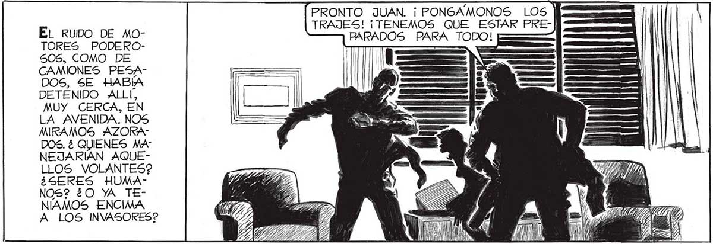
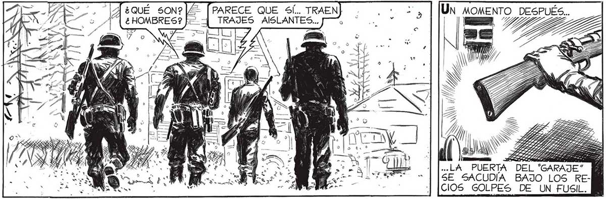
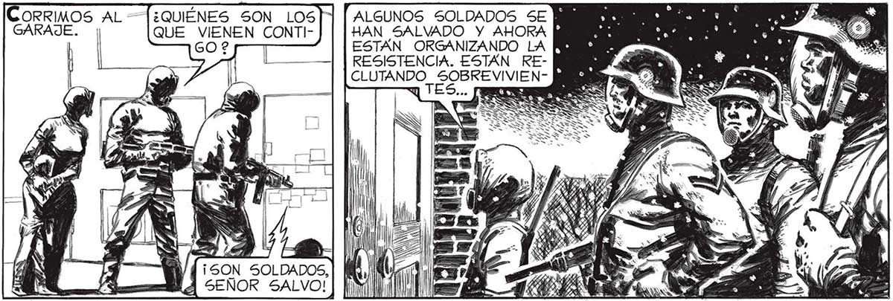

EL RUIDO DE MOTORES PODERO505, COMO DE CAMIONES PESADOS, SE HABÍA DETENIDO ALLÍ, MUY CERCA, EN LA AVENIDA. NOS MIRAMOS AZORADOS. ¿ QUIENES MA NEJARÍAN AQUELLOS VOLANTES? ¿SERES HUMANOS? ¿O YA TENIAMOS ENCIMA A LOS INVASORES? ALLI YO, PABLO! ¡EL CHICO DE LA FERRETERIA QUE USTED SE VO! VI AGARROTARSE EL CUERPO DE ELENA, EN LA VENTANA A LA VEZ QUE UNA VOZ GRITABA... ¡SOY YO, SEÑOR SALVO! ¡sOyY SU_VOZ ERA INCONFUNDIBLE. POR UN LARGO TONTADOS: OÍR A PABLO ERA LO HABIAMOS DADO COMO MUERTO. No NECESITABA TANTO DETALLE: INSTANTE QUEA DAMOS COMO ACOMO OÍR A UN RESUCITADO. YA NUNCA NOS PUSIMOS TAN PRONTO LOS TRAJES AISLANTES ¿SERA POSIBLE QUE NOS HAYAN DESCUBIERTO? ¿POR QUE 5E DETENDRÍIAN TAN CERCA? PRONTO JUAN. ¡ PONGAMONOS LOS | TRAJES! ¡TENEMOS QUE ESTAR PREPARADOS PARA TODO! = [PARECE QUE 5%Í.. TRAEN] | TRAJES AISLANTES... PA ..LA PUERTA DEL “GARAJE” SE SACUDIA BAJO LOS RECIOS GOLPES DE UN FUSIL. ¿QUIÉNES SON LOS| QUE VIENEN CONTI602 ORRIMOS AL =— ALGUNOS SOLDADOS SE GARAJE. HAN SALVADO Y AHORA ESTÁN ORGANIZANDO LA RESISTENCIA. ESTÁN RECLUTANDO a TES sa dd ¿ - A ES e E, (O) VE SOLDADOS, A SEÑOR SALVO! 79


